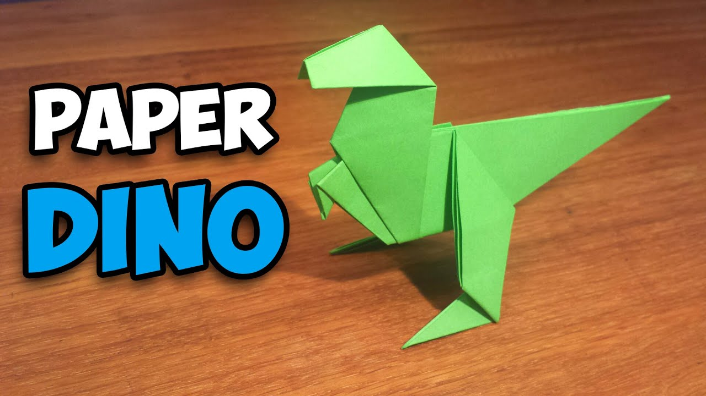

ORIGAMI DESIGNS
About Us
Follow Us
CLICK ON THE PHOTOS TO SEE THE VIDEO TUTORIALS OF THE STEPS
1)ORIGAMI BIRD

Interesting Facts About Birds
-
Ravens are great at mimicking human speech and sounds.
-
Ostriches have the largest eyes of any land animals.
-
Most hummingbirds weigh less than a nickel.
-
Owls devour their prey whole.
2)Origami Teddy Bear

Interesting Facts About Teddy Bears
-
The term bear-hug was first recorded in 1846.
-
The Oxford English Dictionary dates the first use of the term teddy bear to 1906.
-
In 1902 in Germany, Steiff launched “Bear 55 PB”, the first toy bear with jointed arms and legs
-
The Teddy Bears' Picnic song was originally called The Teddy Bear Two Step.
3)Origami Dinosaur

Interesting Facts About Dinosaurs
- Dinosaur fossils have been found on all seven continents.
- There are roughly 700 known species of extinct dinosaurs.
- Modern birds are a kind of dinosaur because they share a common ancestor with non-avian dinosaurs.
- They first appeared during the Triassic period, between 243 and 233.23 million years ago.
4)Origami Tree
Interesting Facts About Trees
- Trees are the longest living species on earth
- Trees help improve water quality by filtering rainfall.
- There are over 60,000 known tree species on the planet.
- Two mature trees can provide enough oxygen for a family of four.